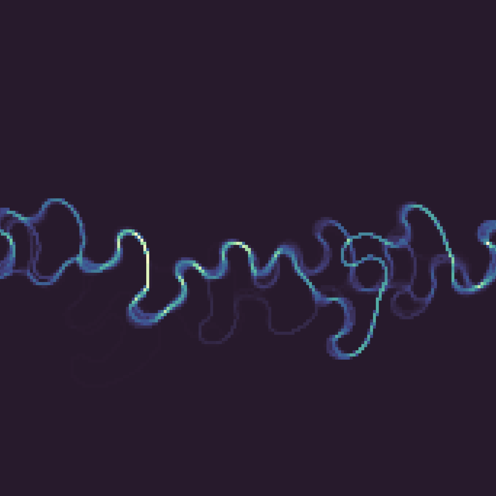

Meandering rivers are among the most dynamic features on Earth's surface. Their channels continuously shift, erode, and deposit sediment, reshaping floodplains over timescales from years to millennia. A key question in geomorphology is whether this evolution is fundamentally predictable or inherently chaotic.
We use a kinematic model of river channel evolution to demonstrate that neck cutoffs introduce sensitive dependence on initial conditions, a hallmark of chaos. Even small perturbations to initial channel geometry lead to dramatically different long-term planform evolution once cutoffs begin to occur.
This finding has implications for how we think about river prediction, floodplain stratigraphy, and the limits of modeling natural channel systems over long time horizons.